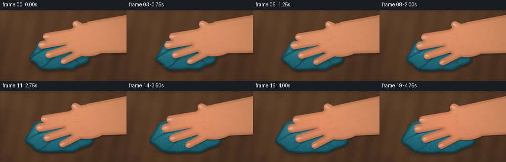
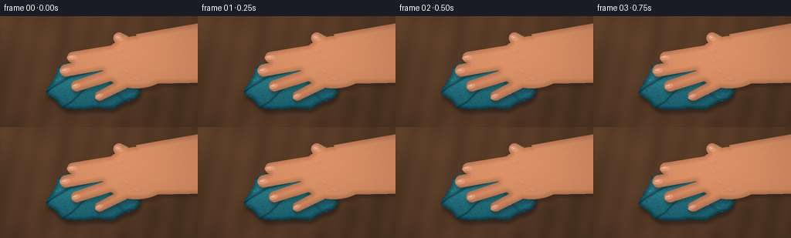

CODING AGENTS AS PIXEL WORLD MODELS
traex/GPT-5.6-Sol · mechanics_0018
点击播放 · 原生 RGB 像素
逐轮保存的候选
回放视频、检查图与代码变化。
每份候选均可单独播放。实际图片检查记录在下方工具轨迹中。
候选 01播放与检查图
点击播放 · 原生 RGB 像素


展开代码变化
--- 上一保存版本
+++ 本次保存版本
@@ -0,0 +1,305 @@
+from pathlib import Path
+import json, math
+import numpy as np
+import cv2
+from PIL import Image
+import artifact_io
+
+CASE_DIR = Path(__file__).resolve().parent
+SPEC = json.loads((CASE_DIR / 'task_spec.json').read_text())
+W, H, N = SPEC['width'], SPEC['height'], SPEC['frames']
+S = 3
+w, h = W*S, H*S
+
+# Deterministic procedural cinematography: all geometry is authored in 256x144 coordinates.
+def sc(v): return int(round(v*S))
+def pts(a): return np.round(np.asarray(a, np.float32)*S).astype(np.int32)
+
+def smoothstep(x):
+ x = np.clip(x, 0, 1)
+ return x*x*(3-2*x)
+
+def blur(mask, sigma):
+ return cv2.GaussianBlur(mask.astype(np.float32), (0,0), sigma*S)
+
+def composite(im, layer, alpha):
+ a = np.clip(alpha, 0, 1)[...,None]
+ return im*(1-a) + layer*a
+
+def solid_layer(rgb):
+ z = np.empty((h,w,3), np.float32); z[:] = rgb
+ return z
+
+def organic_mask(cx, cy, rx, ry, phase, irregular=0.08, count=72):
+ ang = np.linspace(0, 2*np.pi, count, endpoint=False)
+ wob = (1 + irregular*np.sin(3*ang+phase) + irregular*.55*np.sin(7*ang-phase*.7)
+ + irregular*.27*np.sin(11*ang+1.9))
+ xx = cx + rx*wob*np.cos(ang)
+ yy = cy + ry*wob*np.sin(ang)
+ m = np.zeros((h,w), np.float32)
+ cv2.fillPoly(m, [pts(np.c_[xx,yy])], 1, lineType=cv2.LINE_AA)
+ return m
+
+def capsule_mask(a, b, r0, r1=None):
+ if r1 is None: r1 = r0
+ a=np.array(a,float); b=np.array(b,float)
+ d=b-a; L=np.linalg.norm(d); n=np.array([-d[1],d[0]])/max(L,1e-6)
+ poly=np.array([a+n*r0,b+n*r1,b-n*r1,a-n*r0])
+ m=np.zeros((h,w),np.float32)
+ cv2.fillConvexPoly(m,pts(poly),1,lineType=cv2.LINE_AA)
+ cv2.ellipse(m,tuple(pts([a])[0]),(sc(r0),sc(r0)),0,0,360,1,-1,cv2.LINE_AA)
+ cv2.ellipse(m,tuple(pts([b])[0]),(sc(r1),sc(r1)),0,0,360,1,-1,cv2.LINE_AA)
+ return m
+
+def polyline_mask(points, width, closed=False):
+ m=np.zeros((h,w),np.float32)
+ cv2.polylines(m,[pts(points)],closed,1,sc(width),cv2.LINE_AA)
+ return m
+
+def ellipse_mask(center, axes, angle=0):
+ m=np.zeros((h,w),np.float32)
+ cv2.ellipse(m,tuple(pts([center])[0]),(sc(axes[0]),sc(axes[1])),angle,0,360,1,-1,cv2.LINE_AA)
+ return m
+
+def background():
+ yy,xx=np.mgrid[0:h,0:w].astype(np.float32)
+ X=xx/S; Y=yy/S
+ rng=np.random.default_rng(1818)
+ low=cv2.GaussianBlur(rng.normal(size=(h,w)).astype(np.float32),(0,0),14*S)
+ low=(low-low.mean())/(low.std()+1e-5)
+ fine=cv2.GaussianBlur(rng.normal(size=(h,w)).astype(np.float32),(0,0),.45*S)
+ grain=(2.7*np.sin(X*.19 + Y*.045 + .7*np.sin(X*.025)) +
+ 1.6*np.sin(X*.055-Y*.012) + 2.2*low + .8*fine)
+ light=8.5*(1-X/W)*.45 + 5.5*(1-Y/H)
+ base=np.empty((h,w,3),np.float32)
+ base[...,0]=80+grain*1.18+light
+ base[...,1]=55+grain*.82+light*.70
+ base[...,2]=38+grain*.56+light*.47
+ # Long irregular wood pores and seams, kept subtle to preserve subject readability.
+ overlay=np.zeros((h,w),np.float32)
+ for k in range(22):
+ y0=(k*19+7)%h
+ xs=np.arange(-20,w+20,10)
+ ys=y0 + 2.2*S*np.sin(xs/(39*S)+k*.73) + .7*S*np.sin(xs/(9*S)+k)
+ cv2.polylines(overlay,[np.c_[xs,ys].astype(np.int32)],False,.25,1 if k%3 else 2,cv2.LINE_AA)
+ base=composite(base,solid_layer((40,27,21)),blur(overlay,0.28)*.31)
+ # A soft upper-left studio reflection gives a natural close-up lighting setup.
+ glow=np.exp(-(((X-24)/118)**2+((Y-1)/83)**2))
+ base += glow[...,None]*np.array([10,8,5],np.float32)
+ return np.clip(base,0,255)
+
+BG=background()
+# Stable fabric fiber points so texture moves with the deforming cloth rather than flickering.
+rng_f=np.random.default_rng(404)
+fiber_uv=rng_f.uniform([-1,-1],[1,1],(570,2))
+fiber_keep=np.sum(fiber_uv**2,axis=1)<1.1
+fiber_uv=fiber_uv[fiber_keep]
+fiber_val=rng_f.uniform(0,1,len(fiber_uv))
+rng_skin=np.random.default_rng(808)
+skin_noise=cv2.GaussianBlur(rng_skin.normal(size=(h,w)).astype(np.float32),(0,0),.38*S)
+skin_noise/=skin_noise.std()+1e-5
+
+frames=[]
+for fi in range(N):
+ t=fi/(N-1)
+ p=smoothstep(t)
+ # Tiny settling motion suggests time-lapse without camera jitter.
+ settle=0.45*math.sin(fi*1.37)*(1-p)*math.sin(math.pi*t)
+ im=BG.copy()
+ yy,xx=np.mgrid[0:h,0:w].astype(np.float32); X=xx/S; Y=yy/S
+
+ # Expelled water: wet halo first, then a thin irregular puddle and small runnels.
+ pcx,pcy=121-1.5*p,94+1.6*p
+ puddle=organic_mask(pcx,pcy,59+22*p,27+13*p,1.2,.065,84)
+ puddle_soft=blur(puddle,1.35)
+ wet_alpha=(.11+.20*p)*puddle_soft
+ wet_tint=np.empty_like(im)
+ # Wet wood darkens and slightly cools while retaining visible grain underneath.
+ wet_tint[...,0]=44; wet_tint[...,1]=44; wet_tint[...,2]=38
+ im=composite(im,wet_tint,wet_alpha)
+ # Puddle perimeter catches the key light.
+ inner=cv2.erode(puddle,np.ones((sc(1.4),sc(1.4)),np.uint8))
+ rim=np.clip(puddle-inner,0,1)
+ rim*=np.clip(.10+.38*p,0,1)
+ im=composite(im,solid_layer((151,154,135)),blur(rim,.28)*.30)
+ # Progressive droplets and rivulets around the lower/left edge.
+ drops=[(52,105,2.0,.20),(61,122,1.35,.29),(184,119,1.6,.38),(198,102,1.0,.48),
+ (82,132,1.05,.56),(211,89,.8,.69),(42,91,.75,.78)]
+ for di,(dx,dy,rad,onset) in enumerate(drops):
+ q=np.clip((p-onset)/.22,0,1)
+ if q<=0: continue
+ dm=ellipse_mask((dx,dy),(rad*(.55+.45*q),rad*.62*(.55+.45*q)),di*19)
+ im=composite(im,solid_layer((40,51,46)),dm*(.22+.20*q))
+ hi=ellipse_mask((dx-rad*.24,dy-rad*.22),(max(.24,rad*.20),max(.17,rad*.12)),di*19)
+ im=composite(im,solid_layer((218,211,179)),hi*.50*q)
+ if p>.34:
+ q=smoothstep((p-.34)/.66)
+ run=polyline_mask([(65,108),(58-4*q,115+3*q),(51-8*q,119+7*q)],1.05+q*.45)
+ im=composite(im,solid_layer((46,55,48)),blur(run,.45)*(.16+.18*q))
+ gl=polyline_mask([(65,107.5),(58,114.2),(53-7*q,118+6*q)],.26)
+ im=composite(im,solid_layer((190,192,164)),blur(gl,.16)*.43*q)
+
+ # Cloth body broadens under pressure while its raised height/shadow collapses.
+ ccx,ccy=120-1.8*p,89+2.2*p
+ crx,cry=58+14.5*p,34+3.1*p
+ cloth=organic_mask(ccx,ccy,crx,cry,.45+settle*.1,.075-.018*p,88)
+ # Lifted-cloth shadow: large/downward early, close and thin when compressed.
+ sh=np.roll(cloth,(sc(5.4-3.4*p),sc(1.4)),axis=(0,1))
+ sh=blur(sh,2.2-1.0*p)
+ im=composite(im,solid_layer((24,20,18)),sh*(.44-.10*p))
+
+ # Fabric color has depth from distance-to-edge, a mound highlight, and fine stationary weave.
+ dist=cv2.distanceTransform((cloth>.5).astype(np.uint8),cv2.DIST_L2,5)/S
+ edge=np.clip(dist/6,0,1)
+ mound=np.exp(-(((X-(104-2*p))/43)**2+((Y-(72+2*p))/27)**2))
+ lower=np.clip((Y-ccy)/42,-1,1)
+ rng_frame=np.random.default_rng(1200) # fixed; never flickers
+ tex=cv2.GaussianBlur(rng_frame.normal(size=(h,w)).astype(np.float32),(0,0),.3*S)
+ tex/=tex.std()+1e-5
+ cloth_rgb=np.empty_like(im)
+ cloth_rgb[...,0]=18 + 16*edge + 12*mound - 6*lower + tex*2.2
+ cloth_rgb[...,1]=61 + 41*edge + 27*mound - 11*lower + tex*4.1
+ cloth_rgb[...,2]=71 + 44*edge + 28*mound - 10*lower + tex*4.6
+ # Wet sheen increases around compressed central contact region.
+ contact_glow=np.exp(-(((X-132)/50)**2+((Y-75)/31)**2))*p
+ cloth_rgb += contact_glow[...,None]*np.array([5,11,12])
+ im=composite(im,cloth_rgb,cloth)
+
+ # Sculpted folds: dark trough plus a one-pixel bright ridge; folds relax as cloth flattens.
+ fold_specs=[
+ ([(116,67),(93,61),(69,68),(56,78)],3.0),
+ ([(118,72),(91,78),(69,91),(55,101)],3.3),
+ ([(126,77),(106,97),(92,111),(78,119)],2.8),
+ ([(135,76),(148,96),(161,109),(180,114)],2.6),
+ ([(136,66),(160,73),(179,82),(188,92)],2.5),
+ ([(111,63),(97,52),(82,50),(72,55)],2.0),
+ ]
+ for j,(fp,fw) in enumerate(fold_specs):
+ # Outer endpoints spread; central portions sink and smooth under pressure.
+ pp=[]
+ for k,(fx,fy) in enumerate(fp):
+ fac=k/(len(fp)-1)
+ pp.append((ccx+(fx-120)*(1+.16*p*fac), ccy+(fy-89)*(1+.10*p*fac)))
+ trough=polyline_mask(pp,fw*(1-.32*p)) * cloth
+ strength=(.46-.15*p) if j<3 else (.38-.10*p)
+ im=composite(im,solid_layer((8,41,49)),blur(trough,.55)*strength)
+ ridgepts=[(x-.7,y-1.0) for x,y in pp]
+ ridge=polyline_mask(ridgepts,max(.38,fw*.20))*cloth
+ im=composite(im,solid_layer((75,143,146)),blur(ridge,.22)*(.28-.06*p))
+
+ # Terry-cloth nubs/fibers, clipped to silhouette. They spread with the cloth.
+ nub_dark=np.zeros((h,w),np.float32); nub_light=np.zeros((h,w),np.float32)
+ for j,(u,v) in enumerate(fiber_uv):
+ fx=ccx + u*crx*.94; fy=ccy + v*cry*.92
+ ix,iy=sc(fx),sc(fy)
+ if ix<2 or iy<2 or ix>=w-2 or iy>=h-2 or cloth[iy,ix]<.45: continue
+ if fiber_val[j]>.48:
+ cv2.line(nub_light,(ix,iy),(ix+sc(.75),iy-sc(.38)),1,1,cv2.LINE_AA)
+ else:
+ cv2.circle(nub_dark,(ix,iy),max(1,sc(.28)),1,-1,cv2.LINE_AA)
+ im=composite(im,solid_layer((94,158,156)),nub_light*cloth*.28)
+ im=composite(im,solid_layer((7,43,51)),nub_dark*cloth*.23)
+
+ # Compression rays near the uncovered edges emerge as pressure grows.
+ for j,ang in enumerate([2.42,2.68,2.93,1.00,1.23,.42]):
+ q=np.clip((p-(.10+j*.025))/.42,0,1)
+ if q<=0: continue
+ r0=31; r1=47+9*p
+ a=(127+math.cos(ang)*r0,80+math.sin(ang)*r0*.65)
+ mid=(127+math.cos(ang+.07)*((r0+r1)/2),80+math.sin(ang+.07)*((r0+r1)/2)*.67)
+ b=(127+math.cos(ang)*r1,80+math.sin(ang)*r1*.70)
+ crease=polyline_mask([a,mid,b],1.1)*cloth
+ im=composite(im,solid_layer((6,43,50)),blur(crease,.45)*.29*q)
+
+ # Hand geometry: palm-down, approaching from frame right with four visible fingers.
+ sy=1.2+4.0*p+settle
+ sx=-1.4*p
+ hand=np.zeros((h,w),np.float32)
+ wrist_poly=[(176+sx,22+sy),(256,9+sy*.15),(256,86+sy*.35),(194+sx,86+sy)]
+ cv2.fillPoly(hand,[pts(wrist_poly)],1,lineType=cv2.LINE_AA)
+ palm=ellipse_mask((179+sx,58+sy),(48+2*p,34+1.6*p),-5)
+ hand=np.maximum(hand,palm)
+ # Fingers straighten and broaden subtly as pressure increases.
+ fingers=[
+ ((157+sx,43+sy),(94-6*p,52+sy+1.1*p),8.3,7.1),
+ ((157+sx,55+sy),(85-7*p,69+sy+1.6*p),9.0,7.8),
+ ((164+sx,68+sy),(99-6*p,89+sy+2.3*p),8.2,7.0),
+ ((176+sx,78+sy),(129-4*p,102+sy+2.8*p),7.1,6.0),
+ ]
+ for a,b,r0,r1 in fingers:
+ hand=np.maximum(hand,capsule_mask(a,b,r0+.7*p,r1+1.0*p))
+ # Thumb angles upward and braces the pressure.
+ thumb_a=(189+sx,48+sy); thumb_b=(154-2*p+sx,27+sy+.8*p)
+ hand=np.maximum(hand,capsule_mask(thumb_a,thumb_b,9.4,7.4+.5*p))
+
+ # Contact shadow shrinks toward the hand as it bears down; dark occlusion under fingertips.
+ hand_shadow=np.roll(hand,(sc(4.4-2.7*p),sc(.8)),axis=(0,1))
+ hand_shadow=blur(hand_shadow,2.0-1.0*p)
+ im=composite(im,solid_layer((28,24,21)),hand_shadow*(.32+.14*p))
+ for j,(a,b,r0,r1) in enumerate(fingers):
+ contact=capsule_mask((a[0]-3,a[1]+2),(b[0],b[1]+1.6),r0*.76,r1*.68)
+ contact*=cloth
+ im=composite(im,solid_layer((9,34,39)),blur(contact,.8)*(.11+.22*p))
+
+ # Hand skin shading: rounded edge illumination, warm contact flush, pores and soft directional light.
+ hd=cv2.distanceTransform((hand>.5).astype(np.uint8),cv2.DIST_L2,5)/S
+ hedge=np.clip(hd/7.0,0,1)
+ hand_light=np.exp(-(((X-150)/100)**2+((Y-20)/73)**2))
+ skin=np.empty_like(im)
+ skin[...,0]=174 + 30*hedge + 17*hand_light + skin_noise*1.45
+ skin[...,1]=111 + 24*hedge + 13*hand_light + skin_noise*.75
+ skin[...,2]=78 + 18*hedge + 10*hand_light + skin_noise*.52
+ flush=np.exp(-(((X-133)/62)**2+((Y-(70+sy))/39)**2))*p
+ skin[...,0]+=8*flush; skin[...,1]-=3*flush
+ # right/top arm receives light, far lower hand receives soft falloff
+ skin-=np.clip((Y-66)/80,0,1)[...,None]*np.array([8,7,5])
+ im=composite(im,skin,hand)
+
+ # Anatomical knuckles and tendon modeling on the back of the hand.
+ knuckles=[(154,44,0),(156,57,9),(164,70,17),(177,80,25)]
+ for j,(kx,ky,rot) in enumerate(knuckles):
+ km=ellipse_mask((kx+sx,ky+sy),(6.0,3.0),rot)
+ # lower soft red joint, upper pinpoint highlight
+ im=composite(im,solid_layer((186,103,78)),blur(km,1.4)*(.12+.07*p))
+ kh=ellipse_mask((kx-1+sx,ky-1+sy),(3.7,1.15),rot)
+ im=composite(im,solid_layer((240,188,150)),blur(kh,.45)*.22)
+ # Tendons taper back toward wrist.
+ tendons=[[(150,49),(182,43),(224,31)],[(153,61),(188,57),(229,49)],[(165,72),(196,69),(229,65)]]
+ for j,tp in enumerate(tendons):
+ tp=[(x+sx,y+sy*(1-k*.15)) for k,(x,y) in enumerate(tp)]
+ tm=polyline_mask(tp,.48)
+ im=composite(im,solid_layer((236,177,139)),blur(tm,.55)*.17)
+
+ # Fingernails at all four tips and thumbnail: translucent, with a crisp wet catchlight.
+ nail_data=[]
+ for j,(a,b,r0,r1) in enumerate(fingers):
+ vx=b[0]-a[0]; vy=b[1]-a[1]; angle=math.degrees(math.atan2(vy,vx))
+ L=6.7 if j<2 else 5.8
+ cx=b[0]+vx/math.hypot(vx,vy)*1.1; cy=b[1]+vy/math.hypot(vx,vy)*1.1
+ nail_data.append(((cx,cy),(L, r1*.43),angle))
+ vx=thumb_b[0]-thumb_a[0]; vy=thumb_b[1]-thumb_a[1]
+ nail_data.append(((thumb_b[0]+vx/math.hypot(vx,vy),thumb_b[1]+vy/math.hypot(vx,vy)),(5.4,3.05),math.degrees(math.atan2(vy,vx))))
+ for (nc,na,nang) in nail_data:
+ nm=ellipse_mask(nc,na,nang)
+ im=composite(im,solid_layer((226,166,141)),nm*.57)
+ nh=ellipse_mask((nc[0]-.9,nc[1]-.8),(na[0]*.44,max(.38,na[1]*.17)),nang)
+ im=composite(im,solid_layer((250,213,183)),nh*.58)
+
+ # A few bright water beads on exposed cloth communicate saturation unmistakably.
+ beads=[(73,83,.9,.05),(69,103,.65,.22),(187,96,.75,.36),(96,119,.55,.52)]
+ for bx,by,br,on in beads:
+ q=np.clip((p-on)/.3,0,1)
+ bm=ellipse_mask((bx,by),(br,br*.72),-18)*cloth*(1-hand)
+ im=composite(im,solid_layer((190,220,209)),bm*(.22+.38*q))
+
+ # Mild cinematic finishing: vignette and a restrained contrast curve.
+ vig=1-.10*np.clip(((X-W/2)/(W*.72))**2+((Y-H/2)/(H*.75))**2,0,1)
+ im*=vig[...,None]
+ im=np.clip((im-128)*1.035+128,0,255)
+ # Downsample with Lanczos for clean antialiased contours and natural fine texture.
+ out=np.asarray(Image.fromarray(im.astype(np.uint8),'RGB').resize((W,H),Image.Resampling.LANCZOS))
+ frames.append(out)
+
+frames=np.asarray(frames,dtype=np.uint8)
+artifact_io.save(frames, CASE_DIR)
+print(f'saved {frames.shape[0]} RGB frames at {frames.shape[2]}x{frames.shape[1]}')
可观测工具轨迹
实际执行的命令与返回图片。
命令 1exit 0
/bin/bash -lc "cat prompt.txt && printf '\\n--- GENERATION_RULES ---\\n' && cat GENERATION_RULES.md && printf '\\n--- TASK_SPEC ---\\n' && cat task_spec.json"
命令 2exit 1
/bin/bash -lc "find . -maxdepth 2 -type f -printf '%p\\n' | sort && printf '\\n--- tools ---\\n' && command -v ffmpeg && command -v ffprobe && command -v python3"
命令 3exit 0
/bin/bash -lc "cat artifact_io.py && printf '\\n--- python packages ---\\n' && python3 - <<'PY' mods=['numpy','PIL','cv2','imageio','imageio_ffmpeg'] for m in mods: try: x=__import__(m); print(m, 'OK', getattr(x,'__version__','')) except Exception as e: print(m, 'NO',e) PY"
命令 4exit 0
/bin/bash -lc "cat > generate.py <<'PY'
from pathlib import Path
import json, math
import numpy as np
import cv2
from PIL import Image
import artifact_io
CASE_DIR = Path(__file__).resolve().parent
SPEC = json.loads((CASE_DIR / 'task_spec.json').read_text())
W, H, N = SPEC['width'], SPEC['height'], SPEC['frames']
S = 3
w, h = W*S, H*S
# Deterministic procedural cinematography: all geometry is authored in 256x144 coordinates.
def sc(v): return int(round(v*S))
def pts(a): return np.round(np.asarray(a, np.float32)*S).astype(np.int32)
def smoothstep(x):
x = np.clip(x, 0, 1)
return x*x*(3-2*x)
def blur(mask, sigma):
return cv2.GaussianBlur(mask.astype(np.float32), (0,0), sigma*S)
def composite(im, layer, alpha):
a = np.clip(alpha, 0, 1)[...,None]
return im*(1-a) + layer*a
def solid_layer(rgb):
z = np.empty((h,w,3), np.float32); z[:] = rgb
return z
def organic_mask(cx, cy, rx, ry, phase, irregular=0.08, count=72):
ang = np.linspace(0, 2*np.pi, count, endpoint=False)
wob = (1 + irregular*np.sin(3*ang+phase) + irregular*.55*np.sin(7*ang-phase*.7)
+ irregular*.27*np.sin(11*ang+1.9))
xx = cx + rx*wob*np.cos(ang)
yy = cy + ry*wob*np.sin(ang)
m = np.zeros((h,w), np.float32)
cv2.fillPoly(m, [pts(np.c_[xx,yy])], 1, lineType=cv2.LINE_AA)
return m
def capsule_mask(a, b, r0, r1=None):
if r1 is None: r1 = r0
a=np.array(a,float); b=np.array(b,float)
d=b-a; L=np.linalg.norm(d); n=np.array([-d[1],d[0]])/max(L,1e-6)
poly=np.array([a+n*r0,b+n*r1,b-n*r1,a-n*r0])
m=np.zeros((h,w),np.float32)
cv2.fillConvexPoly(m,pts(poly),1,lineType=cv2.LINE_AA)
cv2.ellipse(m,tuple(pts([a])[0]),(sc(r0),sc(r0)),0,0,360,1,-1,cv2.LINE_AA)
cv2.ellipse(m,tuple(pts([b])[0]),(sc(r1),sc(r1)),0,0,360,1,-1,cv2.LINE_AA)
return m
def polyline_mask(points, width, closed=False):
m=np.zeros((h,w),np.float32)
cv2.polylines(m,[pts(points)],closed,1,sc(width),cv2.LINE_AA)
return m
def ellipse_mask(center, axes, angle=0):
m=np.zeros((h,w),np.float32)
cv2.ellipse(m,tuple(pts([center])[0]),(sc(axes[0]),sc(axes[1])),angle,0,360,1,-1,cv2.LINE_AA)
return m
def background():
yy,xx=np.mgrid[0:h,0:w].astype(np.float32)
X=xx/S; Y=yy/S
rng=np.random.default_rng(1818)
low=cv2.GaussianBlur(rng.normal(size=(h,w)).astype(np.float32),(0,0),14*S)
low=(low-low.mean())/(low.std()+1e-5)
fine=cv2.GaussianBlur(rng.normal(size=(h,w)).astype(np.float32),(0,0),.45*S)
grain=(2.7*np.sin(X*.19 + Y*.045 + .7*np.sin(X*.025)) +
1.6*np.sin(X*.055-Y*.012) + 2.2*low + .8*fine)
light=8.5*(1-X/W)*.45 + 5.5*(1-Y/H)
base=np.empty((h,w,3),np.float32)
base[...,0]=80+grain*1.18+light
base[...,1]=55+grain*.82+light*.70
base[...,2]=38+grain*.56+light*.47
# Long irregular wood pores and seams, kept subtle to preserve subject readability.
overlay=np.zeros((h,w),np.float32)
for k in range(22):
y0=(k*19+7)%h
xs=np.arange(-20,w+20,10)
ys=y0 + 2.2*S*np.sin(xs/(39*S)+k*.73) + .7*S*np.sin(xs/(9*S)+k)
cv2.polylines(overlay,[np.c_[xs,ys].astype(np.int32)],False,.25,1 if k%3 else 2,cv2.LINE_AA)
base=composite(base,solid_layer((40,27,21)),blur(overlay,0.28)*.31)
# A soft upper-left studio reflection gives a natural close-up lighting setup.
glow=np.exp(-(((X-24)/118)**2+((Y-1)/83)**2))
base += glow[...,None]*np.array([10,8,5],np.float32)
return np.clip(base,0,255)
BG=background()
# Stable fabric fiber points so texture moves with the deforming cloth rather than flickering.
rng_f=np.random.default_rng(404)
fiber_uv=rng_f.uniform([-1,-1],[1,1],(570,2))
fiber_keep=np.sum(fiber_uv**2,axis=1)<1.1
fiber_uv=fiber_uv[fiber_keep]
fiber_val=rng_f.uniform(0,1,len(fiber_uv))
rng_skin=np.random.default_rng(808)
skin_noise=cv2.GaussianBlur(rng_skin.normal(size=(h,w)).astype(np.float32),(0,0),.38*S)
skin_noise/=skin_noise.std()+1e-5
frames=[]
for fi in range(N):
t=fi/(N-1)
p=smoothstep(t)
# Tiny settling motion suggests time-lapse without camera jitter.
settle=0.45*math.sin(fi*1.37)*(1-p)*math.sin(math.pi*t)
im=BG.copy()
yy,xx=np.mgrid[0:h,0:w].astype(np.float32); X=xx/S; Y=yy/S
# Expelled water: wet halo first, then a thin irregular puddle and small runnels.
pcx,pcy=121-1.5*p,94+1.6*p
puddle=organic_mask(pcx,pcy,59+22*p,27+13*p,1.2,.065,84)
puddle_soft=blur(puddle,1.35)
wet_alpha=(.11+.20*p)*puddle_soft
wet_tint=np.empty_like(im)
# Wet wood darkens and slightly cools while retaining visible grain underneath.
wet_tint[...,0]=44; wet_tint[...,1]=44; wet_tint[...,2]=38
im=composite(im,wet_tint,wet_alpha)
# Puddle perimeter catches the key light.
inner=cv2.erode(puddle,np.ones((sc(1.4),sc(1.4)),np.uint8))
rim=np.clip(puddle-inner,0,1)
rim*=np.clip(.10+.38*p,0,1)
im=composite(im,solid_layer((151,154,135)),blur(rim,.28)*.30)
# Progressive droplets and rivulets around the lower/left edge.
drops=[(52,105,2.0,.20),(61,122,1.35,.29),(184,119,1.6,.38),(198,102,1.0,.48),
(82,132,1.05,.56),(211,89,.8,.69),(42,91,.75,.78)]
for di,(dx,dy,rad,onset) in enumerate(drops):
q=np.clip((p-onset)/.22,0,1)
if q<=0: continue
dm=ellipse_mask((dx,dy),(rad*(.55+.45*q),rad*.62*(.55+.45*q)),di*19)
im=composite(im,solid_layer((40,51,46)),dm*(.22+.20*q))
hi=ellipse_mask((dx-rad*.24,dy-rad*.22),(max(.24,rad*.20),max(.17,rad*.12)),di*19)
im=composite(im,solid_layer((218,211,179)),hi*.50*q)
if p>.34:
q=smoothstep((p-.34)/.66)
run=polyline_mask([(65,108),(58-4*q,115+3*q),(51-8*q,119+7*q)],1.05+q*.45)
im=composite(im,solid_layer((46,55,48)),blur(run,.45)*(.16+.18*q))
gl=polyline_mask([(65,107.5),(58,114.2),(53-7*q,118+6*q)],.26)
im=composite(im,solid_layer((190,192,164)),blur(gl,.16)*.43*q)
# Cloth body broadens under pressure while its raised height/shadow collapses.
ccx,ccy=120-1.8*p,89+2.2*p
crx,cry=58+14.5*p,34+3.1*p
cloth=organic_mask(ccx,ccy,crx,cry,.45+settle*.1,.075-.018*p,88)
# Lifted-cloth shadow: large/downward early, close and thin when compressed.
sh=np.roll(cloth,(sc(5.4-3.4*p),sc(1.4)),axis=(0,1))
sh=blur(sh,2.2-1.0*p)
im=composite(im,solid_layer((24,20,18)),sh*(.44-.10*p))
# Fabric color has depth from distance-to-edge, a mound highlight, and fine stationary weave.
dist=cv2.distanceTransform((cloth>.5).astype(np.uint8),cv2.DIST_L2,5)/S
edge=np.clip(dist/6,0,1)
mound=np.exp(-(((X-(104-2*p))/43)**2+((Y-(72+2*p))/27)**2))
lower=np.clip((Y-ccy)/42,-1,1)
rng_frame=np.random.default_rng(1200) # fixed; never flickers
tex=cv2.GaussianBlur(rng_frame.normal(size=(h,w)).astype(np.float32),(0,0),.3*S)
tex/=tex.std()+1e-5
cloth_rgb=np.empty_like(im)
cloth_rgb[...,0]=18 + 16*edge + 12*mound - 6*lower + tex*2.2
cloth_rgb[...,1]=61 + 41*edge + 27*mound - 11*lower + tex*4.1
cloth_rgb[...,2]=71 + 44*edge + 28*mound - 10*lower + tex*4.6
# Wet sheen increases around compressed central contact region.
contact_glow=np.exp(-(((X-132)/50)**2+((Y-75)/31)**2))*p
cloth_rgb += contact_glow[...,None]*np.array([5,11,12])
im=composite(im,cloth_rgb,cloth)
# Sculpted folds: dark trough plus a one-pixel bright ridge; folds relax as cloth flattens.
fold_specs=[
([(116,67),(93,61),(69,68),(56,78)],3.0),
([(118,72),(91,78),(69,91),(55,101)],3.3),
([(126,77),(106,97),(92,111),(78,119)],2.8),
([(135,76),(148,96),(161,109),(180,114)],2.6),
([(136,66),(160,73),(179,82),(188,92)],2.5),
([(111,63),(97,52),(82,50),(72,55)],2.0),
]
for j,(fp,fw) in enumerate(fold_specs):
# Outer endpoints spread; central portions sink and smooth under pressure.
pp=[]
for k,(fx,fy) in enumerate(fp):
fac=k/(len(fp)-1)
pp.append((ccx+(fx-120)*(1+.16*p*fac), ccy+(fy-89)*(1+.10*p*fac)))
trough=polyline_mask(pp,fw*(1-.32*p)) * cloth
strength=(.46-.15*p) if j<3 else (.38-.10*p)
im=composite(im,solid_layer((8,41,49)),blur(trough,.55)*strength)
ridgepts=[(x-.7,y-1.0) for x,y in pp]
ridge=polyline_mask(ridgepts,max(.38,fw*.20))*cloth
im=composite(im,solid_layer((75,143,146)),blur(ridge,.22)*(.28-.06*p))
# Terry-cloth nubs/fibers, clipped to silhouette. They spread with the cloth.
nub_dark=np.zeros((h,w),np.float32); nub_light=np.zeros((h,w),np.float32)
for j,(u,v) in enumerate(fiber_uv):
fx=ccx + u*crx*.94; fy=ccy + v*cry*.92
ix,iy=sc(fx),sc(fy)
if ix<2 or iy<2 or ix>=w-2 or iy>=h-2 or cloth[iy,ix]<.45: continue
if fiber_val[j]>.48:
cv2.line(nub_light,(ix,iy),(ix+sc(.75),iy-sc(.38)),1,1,cv2.LINE_AA)
else:
cv2.circle(nub_dark,(ix,iy),max(1,sc(.28)),1,-1,cv2.LINE_AA)
im=composite(im,solid_layer((94,158,156)),nub_light*cloth*.28)
im=composite(im,solid_layer((7,43,51)),nub_dark*cloth*.23)
# Compression rays near the uncovered edges emerge as pressure grows.
for j,ang in enumerate([2.42,2.68,2.93,1.00,1.23,.42]):
q=np.clip((p-(.10+j*.025))/.42,0,1)
if q<=0: continue
r0=31; r1=47+9*p
a=(127+math.cos(ang)*r0,80+math.sin(ang)*r0*.65)
mid=(127+math.cos(ang+.07)*((r0+r1)/2),80+math.sin(ang+.07)*((r0+r1)/2)*.67)
b=(127+math.cos(ang)*r1,80+math.sin(ang)*r1*.70)
crease=polyline_mask([a,mid,b],1.1)*cloth
im=composite(im,solid_layer((6,43,50)),blur(crease,.45)*.29*q)
# Hand geometry: palm-down, approaching from frame right with four visible fingers.
sy=1.2+4.0*p+settle
sx=-1.4*p
hand=np.zeros((h,w),np.float32)
wrist_poly=[(176+sx,22+sy),(256,9+sy*.15),(256,86+sy*.35),(194+sx,86+sy)]
cv2.fillPoly(hand,[pts(wrist_poly)],1,lineType=cv2.LINE_AA)
palm=ellipse_mask((179+sx,58+sy),(48+2*p,34+1.6*p),-5)
hand=np.maximum(hand,palm)
# Fingers straighten and broaden subtly as pressure increases.
fingers=[
((157+sx,43+sy),(94-6*p,52+sy+1.1*p),8.3,7.1),
((157+sx,55+sy),(85-7*p,69+sy+1.6*p),9.0,7.8),
((164+sx,68+sy),(99-6*p,89+sy+2.3*p),8.2,7.0),
((176+sx,78+sy),(129-4*p,102+sy+2.8*p),7.1,6.0),
]
for a,b,r0,r1 in fingers:
hand=np.maximum(hand,capsule_mask(a,b,r0+.7*p,r1+1.0*p))
# Thumb angles upward and braces the pressure.
thumb_a=(189+sx,48+sy); thumb_b=(154-2*p+sx,27+sy+.8*p)
hand=np.maximum(hand,capsule_mask(thumb_a,thumb_b,9.4,7.4+.5*p))
# Contact shadow shrinks toward the hand as it bears down; dark occlusion under fingertips.
hand_shadow=np.roll(hand,(sc(4.4-2.7*p),sc(.8)),axis=(0,1))
hand_shadow=blur(hand_shadow,2.0-1.0*p)
im=composite(im,solid_layer((28,24,21)),hand_shadow*(.32+.14*p))
for j,(a,b,r0,r1) in enumerate(fingers):
contact=capsule_mask((a[0]-3,a[1]+2),(b[0],b[1]+1.6),r0*.76,r1*.68)
contact*=cloth
im=composite(im,solid_layer((9,34,39)),blur(contact,.8)*(.11+.22*p))
# Hand skin shading: rounded edge illumination, warm contact flush, pores and soft directional light.
hd=cv2.distanceTransform((hand>.5).astype(np.uint8),cv2.DIST_L2,5)/S
hedge=np.clip(hd/7.0,0,1)
hand_light=np.exp(-(((X-150)/100)**2+((Y-20)/73)**2))
skin=np.empty_like(im)
skin[...,0]=174 + 30*hedge + 17*hand_light + skin_noise*1.45
skin[...,1]=111 + 24*hedge + 13*hand_light + skin_noise*.75
skin[...,2]=78 + 18*hedge + 10*hand_light + skin_noise*.52
flush=np.exp(-(((X-133)/62)**2+((Y-(70+sy))/39)**2))*p
skin[...,0]+=8*flush; skin[...,1]-=3*flush
# right/top arm receives light, far lower hand receives soft falloff
skin-=np.clip((Y-66)/80,0,1)[...,None]*np.array([8,7,5])
im=composite(im,skin,hand)
# Anatomical knuckles and tendon modeling on the back of the hand.
knuckles=[(154,44,0),(156,57,9),(164,70,17),(177,80,25)]
for j,(kx,ky,rot) in enumerate(knuckles):
km=ellipse_mask((kx+sx,ky+sy),(6.0,3.0),rot)
# lower soft red joint, upper pinpoint highlight
im=composite(im,solid_layer((186,103,78)),blur(km,1.4)*(.12+.07*p))
kh=ellipse_mask((kx-1+sx,ky-1+sy),(3.7,1.15),rot)
im=composite(im,solid_layer((240,188,150)),blur(kh,.45)*.22)
# Tendons taper back toward wrist.
tendons=[[(150,49),(182,43),(224,31)],[(153,61),(188,57),(229,49)],[(165,72),(196,69),(229,65)]]
for j,tp in enumerate(tendons):
tp=[(x+sx,y+sy*(1-k*.15)) for k,(x,y) in enumerate(tp)]
tm=polyline_mask(tp,.48)
im=composite(im,solid_layer((236,177,139)),blur(tm,.55)*.17)
# Fingernails at all four tips and thumbnail: translucent, with a crisp wet catchlight.
nail_data=[]
for j,(a,b,r0,r1) in enumerate(fingers):
vx=b[0]-a[0]; vy=b[1]-a[1]; angle=math.degrees(math.atan2(vy,vx))
L=6.7 if j<2 else 5.8
cx=b[0]+vx/math.hypot(vx,vy)*1.1; cy=b[1]+vy/math.hypot(vx,vy)*1.1
nail_data.append(((cx,cy),(L, r1*.43),angle))
vx=thumb_b[0]-thumb_a[0]; vy=thumb_b[1]-thumb_a[1]
nail_data.append(((thumb_b[0]+vx/math.hypot(vx,vy),thumb_b[1]+vy/math.hypot(vx,vy)),(5.4,3.05),math.degrees(math.atan2(vy,vx))))
for (nc,na,nang) in nail_data:
nm=ellipse_mask(nc,na,nang)
im=composite(im,solid_layer((226,166,141)),nm*.57)
nh=ellipse_mask((nc[0]-.9,nc[1]-.8),(na[0]*.44,max(.38,na[1]*.17)),nang)
im=composite(im,solid_layer((250,213,183)),nh*.58)
# A few bright water beads on exposed cloth communicate saturation unmistakably.
beads=[(73,83,.9,.05),(69,103,.65,.22),(187,96,.75,.36),(96,119,.55,.52)]
for bx,by,br,on in beads:
q=np.clip((p-on)/.3,0,1)
bm=ellipse_mask((bx,by),(br,br*.72),-18)*cloth*(1-hand)
im=composite(im,solid_layer((190,220,209)),bm*(.22+.38*q))
# Mild cinematic finishing: vignette and a restrained contrast curve.
vig=1-.10*np.clip(((X-W/2)/(W*.72))**2+((Y-H/2)/(H*.75))**2,0,1)
im*=vig[...,None]
im=np.clip((im-128)*1.035+128,0,255)
# Downsample with Lanczos for clean antialiased contours and natural fine texture.
out=np.asarray(Image.fromarray(im.astype(np.uint8),'RGB').resize((W,H),Image.Resampling.LANCZOS))
frames.append(out)
frames=np.asarray(frames,dtype=np.uint8)
artifact_io.save(frames, CASE_DIR)
print(f'saved {frames.shape[0]} RGB frames at {frames.shape[2]}x{frames.shape[1]}')
PY
python3 generate.py
ls -lh pixels.npz inspection.png transition_check.png index.html frames/00.png frames/19.png"命令 5exit 0
/bin/bash -lc "python3 - <<'PY'
from pathlib import Path
import numpy as np
from PIL import Image
z=np.load('pixels.npz')['pixels']
assert z.shape==(144,256,20),z.shape
assert z.dtype==np.uint32,z.dtype
rgb=np.stack([(z>>16)&255,(z>>8)&255,z&255],axis=-1).transpose(2,0,1,3).astype(np.uint8)
files=sorted(Path('frames').glob('*.png'))
assert len(files)==20
for i,p in enumerate(files):
a=np.asarray(Image.open(p).convert('RGB'))
assert a.shape==(144,256,3) and np.array_equal(a,rgb[i])
mad=np.abs(np.diff(rgb.astype(np.int16),axis=0)).mean(axis=(1,2,3))
changed=(np.diff(rgb.astype(np.int16),axis=0)"'!=0).any(axis=3).mean(axis=(1,2))
print('"'tensor',z.shape,z.dtype,'range',rgb.min(),rgb.max())
print('unique frames',len({x.tobytes() for x in rgb}))
print('adjacent mean abs deltas:',np.round(mad,3).tolist())
print('changed pixel fractions:',np.round(changed,3).tolist())
print('first-last MAD',round(float(np.abs(rgb[-1].astype(int)-rgb[0]).mean()),3))
print('validation OK')
PY"命令 6exit 0
/bin/bash -lc 'python3 -m py_compile generate.py artifact_io.py && git status --short 2>/dev/null || true && du -sh .'
命令 7exit 1
/bin/bash -lc "python3 - <<'PY'
import numpy as np
from PIL import Image
F=np.array([np.array(Image.open(f).convert('RGB')) for f in sorted(__import__('pathlib').Path('frames').glob('*.png'))])
# Broad color populations provide a quick semantic/deformation sanity check.
blue=(F[...,2]>F[...,0]*1.35)&(F[...,1]>F[...,0]*1.35)&(F[...,2]>55)
skin=(F[...,0]>125)&(F[...,0]>F[...,1]*1.25)&(F[...,1]>F[...,2]*1.2)
print('blue-cloth pixels first/mid/last:',[int(blue[i].sum()) for i in (0,5,10,15,19)])
print('skin/hand pixels first/mid/last:',[int(skin[i].sum()) for i in (0,5,10,15,19)])
# static corners and dynamic center checks
D=np.abs(F[-1].astype(np.int16)-F[0].astype(np.int16)).mean(3)
print('mean change center:',round(float(D[30:130,35:225].mean()),2),'corners:',round(float(np.r_[D[:18,:30].ravel(),D[-18:,-30:].ravel()].mean()),2))
assert D[30:130,35:225].mean()>6 and D[:15,:25].mean()<2
print('semantic motion sanity OK')
PY"命令 8exit 0
/bin/bash -lc "python3 - <<'PY'
import numpy as np
from PIL import Image
from pathlib import Path
F=np.array([np.array(Image.open(f).convert('RGB')) for f in sorted(Path('frames').glob('*.png'))])
blue=(F[...,2]>F[...,0]*1.35)&(F[...,1]>F[...,0]*1.35)&(F[...,2]>55)
skin=(F[...,0]>125)&(F[...,0]>F[...,1]*1.25)&(F[...,1]>F[...,2]*1.2)
D=np.abs(F[-1].astype(np.int16)-F[0].astype(np.int16)).mean(axis=2)
corners=np.concatenate([D[:18,:30].ravel(),D[-18:,-30:].ravel()])
print('blue-cloth pixels first/mid/last:',[int(blue[i].sum()) for i in (0,5,10,15,19)])
print('skin/hand pixels first/mid/last:',[int(skin[i].sum()) for i in (0,5,10,15,19)])
print('mean change center:',round(float(D[30:130,35:225].mean()),2),'corners:',round(float(corners.mean()),2))
assert blue[-1].sum()>blue[0].sum()*1.15
assert D[30:130,35:225].mean()>6 and corners.mean()<2
print('semantic motion sanity OK')
PY"保存候选 1 份；完成命令 8 次；可验证图片返回 0 张。原始 API 响应与完整日志保留在本地。